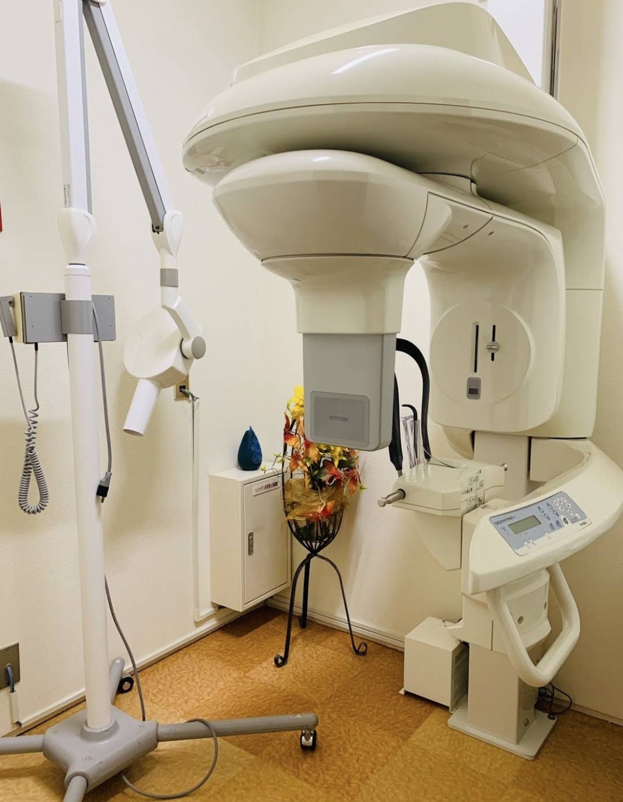

OTANI DENTAL CLINIC
症例・院内紹介
今後、症例や院内の取り組みを掲載予定です。

まずは状態を確認し、分かりやすくご説明します。
必要に応じてCTなどの設備を活用し、お口の状態を確認します。治療前には内容をできるだけ丁寧に説明し、安心して治療を受けていただけるよう心がけています。
OTANI DENTAL CLINIC
今後、症例や院内の取り組みを掲載予定です。

必要に応じてCTなどの設備を活用し、お口の状態を確認します。治療前には内容をできるだけ丁寧に説明し、安心して治療を受けていただけるよう心がけています。